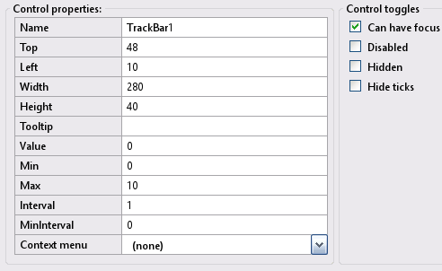
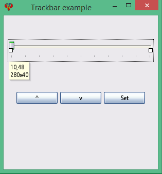

Toolbox Track-bar
A TrackBar control in an InForm application presents the user with a draggable slider used to set a value within a range of preset values. This page provides more detailed information about TrackBar controls.
Track-bar control
Create a new Track-bar control by clicking the Track-bar icon in the Toolbox. The newly created control will be displayed in the preview window; allowing you to move it around to meet your design requirements. Edit the Track-bar properties as necessary.
9) Track-bar Properties:
Track-bar example: Preview window.
Note: Track-bar properties will reflect the highlighted control selected in the preview window, enabling you to customize it as needed.
A TrackBar control presents the user with a draggable slider used to set a value between the preset minimum (Min) and maximum (Max) values.
At runtime, you can return or set the Value property
theItem% = Control(ControlID).Value
Control(ControlID).Value = n%
By setting the Interval property, you determine the number of ticks that will be displayed along the track. If you require an intermediary set of ticks, use the MinInterval property.
Track-bar example
Specification: Let the Track-bar example have the following design specification:
- The TrackBar should have a range of 0 to 10.
- Two buttons should be added to increment and decrement the TrackBar value.
- A Set button should set the TrackBar value to 50%.
Implimenation: The following provide solutions for the above:
- Set the MIN and MAX properties of the TrackBar to 0 and 10, respectively.
- The buttons for increment, decrement, set, and the TrackBar itself should use the subroutine __UI_Click.
- For additional details, refer to the file Trackbar_example.bas.
- Save the project at the layout stage by selecting File -> Save project as and enter the name Trackbar_example.
Basic file Trackbar_example.bas
': This program uses
': InForm - GUI library for QB64 - v1.5
': Fellippe Heitor, 2016-2024 - fellippe@qb64.org - @fellippeheitor
': https://github.com/FellippeHeitor/InForm
'-----------------------------------------------------------
Option _Explicit ' <---
Dim Shared track_value As Integer ' <---
': Controls' IDs: ------------------------------------------------------------------
Dim Shared TrackbarExample As Long
Dim Shared TrackBar1 As Long
Dim Shared upBT As Long
Dim Shared downBT As Long
Dim Shared SetBT As Long
': External modules: ---------------------------------------------------------------
'$INCLUDE:'InForm\InForm.bi'
'$INCLUDE:'InForm\xp.uitheme'
'$INCLUDE:'Trackbar_example.frm'
': Event procedures: ---------------------------------------------------------------
Sub __UI_BeforeInit
End Sub
Sub __UI_OnLoad
End Sub
Sub __UI_BeforeUpdateDisplay
'This event occurs at approximately 60 frames per second.
'You can change the update frequency by calling SetFrameRate DesiredRate%
End Sub
Sub __UI_BeforeUnload
'If you set __UI_UnloadSignal = False here you can
'cancel the user's request to close.
End Sub
Sub __UI_Click (id As Long)
Select Case id
Case TrackbarExample
Case TrackBar1
Case upBT
track_value = track_value + 1 ' <---
If (track_value = Control(TrackBar1).Max + 1) Then track_value = Control(TrackBar1).Max
Control(TrackBar1).Value = track_value ' <---
Case downBT
track_value = track_value - 1 ' <---
If (track_value = Control(TrackBar1).Min - 1) Then track_value = Control(TrackBar1).Min
Control(TrackBar1).Value = track_value ' <---
Case SetBT
track_value = Control(TrackBar1).Max / 2 ' <---
Control(TrackBar1).Value = track_value ' <---
End Select
End Sub
Sub __UI_MouseEnter (id As Long)
Select Case id
Case TrackbarExample
Case TrackBar1
Case upBT
Case downBT
Case SetBT
End Select
End Sub
Sub __UI_MouseLeave (id As Long)
Select Case id
Case TrackbarExample
Case TrackBar1
Case upBT
Case downBT
Case SetBT
End Select
End Sub
Sub __UI_FocusIn (id As Long)
Select Case id
Case TrackBar1
Case upBT
Case downBT
Case SetBT
End Select
End Sub
Sub __UI_FocusOut (id As Long)
'This event occurs right before a control loses focus.
'To prevent a control from losing focus, set __UI_KeepFocus = True below.
Select Case id
Case TrackBar1
Case upBT
Case downBT
Case SetBT
End Select
End Sub
Sub __UI_MouseDown (id As Long)
Select Case id
Case TrackbarExample
Case TrackBar1
Case upBT
Case downBT
Case SetBT
End Select
End Sub
Sub __UI_MouseUp (id As Long)
Select Case id
Case TrackbarExample
Case TrackBar1
Case upBT
Case downBT
Case SetBT
End Select
End Sub
Sub __UI_KeyPress (id As Long)
'When this event is fired, __UI_KeyHit will contain the code of the key hit.
'You can change it and even cancel it by making it = 0
Select Case id
Case TrackBar1
Case upBT
Case downBT
Case SetBT
End Select
End Sub
Sub __UI_TextChanged (id As Long)
Select Case id
End Select
End Sub
Sub __UI_ValueChanged (id As Long)
Select Case id
Case TrackBar1
track_value = Control(TrackBar1).Value ' <---
End Select
End Sub
Sub __UI_FormResized
End Sub
'$INCLUDE:'InForm/InForm.ui'
Form file Trackbar_example.frm
': This form was generated by
': InForm - GUI library for QB64 - v1.5
': Fellippe Heitor, 2016-2024 - fellippe@qb64.org - @fellippeheitor
': https://github.com/FellippeHeitor/InForm
'-----------------------------------------------------------
SUB __UI_LoadForm
DIM __UI_NewID AS LONG, __UI_RegisterResult AS LONG
__UI_NewID = __UI_NewControl(__UI_Type_Form, "TrackbarExample", 300, 300, 0, 0, 0)
__UI_RegisterResult = 0
SetCaption __UI_NewID, "Trackbar example"
Control(__UI_NewID).Font = SetFont("segoeui.ttf", 12)
Control(__UI_NewID).HasBorder = False
__UI_NewID = __UI_NewControl(__UI_Type_TrackBar, "TrackBar1", 280, 40, 10, 48, 0)
__UI_RegisterResult = 0
Control(__UI_NewID).HasBorder = False
Control(__UI_NewID).Max = 10
Control(__UI_NewID).CanHaveFocus = True
Control(__UI_NewID).Interval = 1
__UI_NewID = __UI_NewControl(__UI_Type_Button, "upBT", 80, 23, 25, 149, 0)
__UI_RegisterResult = 0
SetCaption __UI_NewID, "&^"
Control(__UI_NewID).HasBorder = False
Control(__UI_NewID).CanHaveFocus = True
__UI_NewID = __UI_NewControl(__UI_Type_Button, "downBT", 80, 23, 110, 149, 0)
__UI_RegisterResult = 0
SetCaption __UI_NewID, "v"
Control(__UI_NewID).HasBorder = False
Control(__UI_NewID).CanHaveFocus = True
__UI_NewID = __UI_NewControl(__UI_Type_Button, "SetBT", 80, 23, 195, 149, 0)
__UI_RegisterResult = 0
SetCaption __UI_NewID, "Set"
Control(__UI_NewID).HasBorder = False
Control(__UI_NewID).CanHaveFocus = True
END SUB
SUB __UI_AssignIDs
TrackbarExample = __UI_GetID("TrackbarExample")
TrackBar1 = __UI_GetID("TrackBar1")
upBT = __UI_GetID("upBT")
downBT = __UI_GetID("downBT")
SetBT = __UI_GetID("SetBT")
END SUB
Events
Properties editable at runtime
- HasBorder
- Caption
- Top/Left/Width/Height
- Font
- Tool tip
- Color properties
- Disabled
- BackStyle
- Hidden
- Value
- Min
- Max
- Interval
- MinInterval